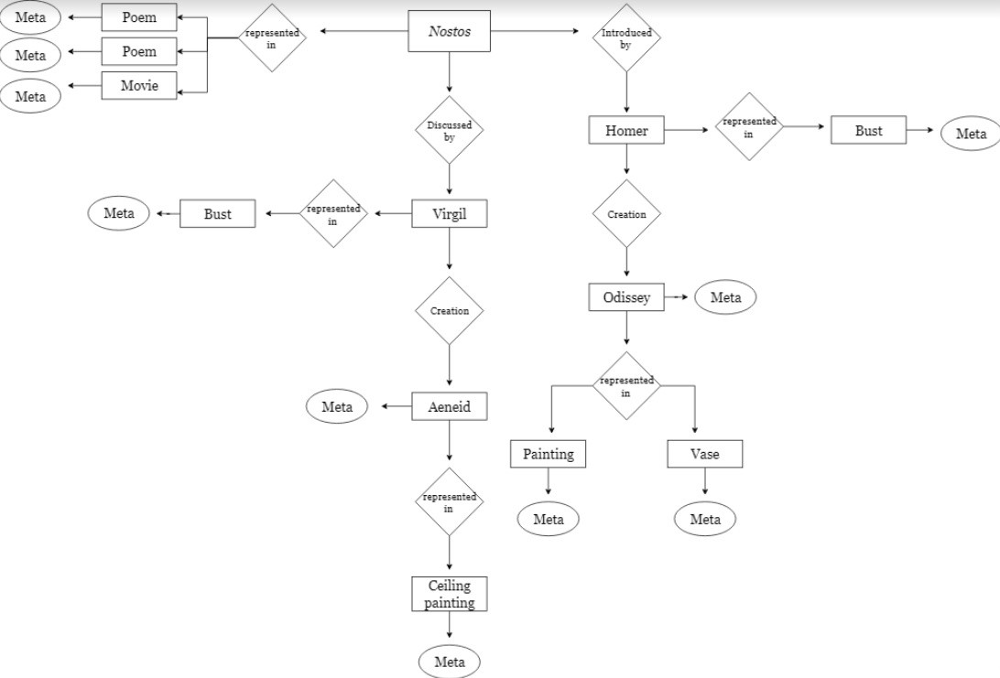
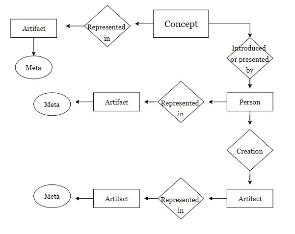
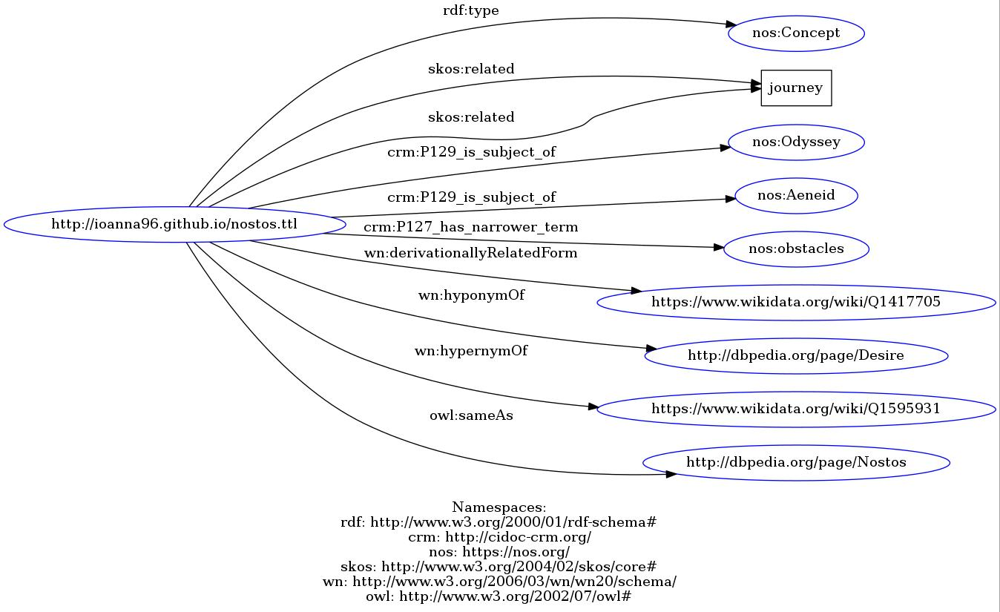
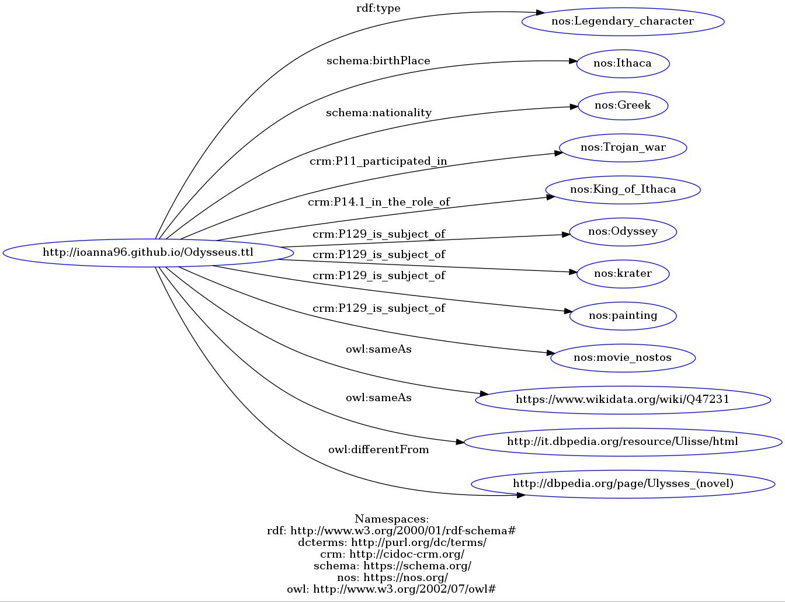

The Odyssey
The work of Homer is fundamental in the investigation of the concept of nostos. Homer was the first one to describe with one word the idea of the journey back home, during which the hero has to overcome various obstacles...
Nostos (from the ancient Greek word νέομαι/neomai, which means “to go or to come back”) refers to the return to one’s home. The concept of nostos was prevalent and introduced for the first time in Homer’s epic poem “Odyssey”, which remains one of the most important works in the Greek literary tradition. We decided to investigate the manifestations of this concept in Greek and Italian works of art, considering our own backgrounds and wishing to draw one more link between two cultures already strongly related.
We decided that the concept of nostos occupied the central position in our idea, so we connected the related items and entities to it. The first diagram is the model that represents our idea in more specific terms. We decided to also create a more abstract version of it (see second diagram), in order to demonstrate that our general model can be applied in different contexts, as well.

For the purposes of our project, we decided on ten items of various types located in museums, archives and libraries.
The work of Homer is fundamental in the investigation of the concept of nostos. Homer was the first one to describe with one word the idea of the journey back home, during which the hero has to overcome various obstacles...
The poem “Ithaca” by Kavafy is a well-known poem that tackles the concept of nostos by making allusions to Homer’s Odyssey...
The bust depicts the face of Homer, the author of Odyssey and it is held at the British Museum...
The bowl depicts a scene from Odyssey, namely the encounter of Odysseus with Circe...
The painting depicts another scene from the Odyssey: the intervention of Hermes, who helped Odysseus stay immune to the enchantments of Circe. The entry of the item was found at the online museum The Ringling...
Foscolo's collection of poems, and especially the poem Zacinto, is related to our core concept. In his Zacinto Foscolo mentions Odyssey and speaks of exile. The item could be found only ...
The painting represents a scene from Eneide, more specifically the escape of Enea from Troy. After the Greeks destroyed Troy, Enea...
This item is a movie, held in the Rosebud Cinema Archive of Reggio Emilia. It follows the adventures of Odysseus during his trip back to Ithaca...
The bust represents the portrait of Virgil, the author of Eneid, which is rather central in our idea of connecting the Italian and Greek tradition on the basis of the concept of nostos. Virgil was and is a primary figure in the area of Italian letters. His bust can be found in Catalogo Generale dei beni culturali...
Eneide is the famous epic poem written by Virgil and remains to our day one of the most important works of the Italian culture. It follows the adventures of Enea, after the loss of his home. In one sense, nostos is impossible for him and we thought this was an importan aspect to be taken into consideration...
In this part, we will map the ways in which the same questions are answered by the different standards and ontologies. Working on the metadata alignment allowed us to achieve a deeper understanding of the world of LOD. By examining how the various standards and ontologies describe aspects of an item we saw in practice which models are focused on libraries, archives or museums and we realized which are their strengths and weaknesses.
In this part of the project, we are going to discuss briefly the questions we are going to address, in order to describe our items and clarify which of their aspects we are most interested in.The model is divided in four parts; WHO, which regards the people related to the items; WHAT, which refers to relevant concepts; WHEN, which concerns dates; and WHERE, which includes places.
WHO
We are taking into consideration the people who are involved somehow in our core concept of νοστος, either as intellectuals whose work is centered around this concept or as subjects of works of art related to the concept. We are also interested in the people who made the items related to nostos available to the public in one way or another, mainly publishers and curators. Some of the creators are also subjects, thus we need to distinguish between the entity which creates from the entity which is represented. We also thought it would be useful to differentiate the people from the concepts functioning as subjects/topics. To address these points, we decided to use CIDOC-CRM and Dublin Core. Dublin Core terms were employed to show the different roles an agent can have (creator, subject, contributor) since CIDOC-CRM was not as specific in this aspect (in the role of, is about). It was adequate, though, to define the various roles, major events and references in works of art.
WHAT
This part of our theoretical model is essential. Our idea is centered around the core concept of nostos, so we need to properly address the question “What is the content of our objects?” Since we explore our idea in its manifestations in (Italian and Greek) works of art, we are also interested in the title and the type of representation of each object. With these aims in mind, we decided to use once more CIDOC-CRM to identify the topic and subtopics of our items. Dublin Core terms were also useful for this purpose, since they allowed us to specify even further the subtopics by classifying them as spatial, when a location was an important part of the content, or temporal, when a time period was a significant subtopic. Regarding representation, we used rdf:type, which could be reused for all of our entities, as we will demonstrate later. Finally, we chose rdfs:label to identify the title of the items, since the name provided was not always official, standard or provided by the creator. Therefore, we considered “label” to be a more appropriate predicate than “title”.
WHERE
The aspect of location is secondary in our case, but still highly relevant to our idea. The most important question to address here is “Where was the item created?” since we are examining works of art in the Italian and Greek tradition. Moreover, due to the fact that we are dealing with works of art, it is worthwhile to mention the institution in which they are kept. For these purposes, we used Schema to specify the location where the items were created and CIDOC-CRM to state where the items are being held. When further describing each location, we used Geonames to provide the controlled name and the code of the countries.
WHEN
The aspect of time is the least relevant to our idea. In any case, it might be interesting to examine the period in which the works of art were created. Therefore, for our purposes, we consider the year and/or the time period of creation, when provided by the various institutions. We decided to use Schema to provide this information.
The conceptual model is the application of our ideas on how to describe our items, as anticipated in the part of the theoretical model, by using, namely, CIDOC-CRM, DC terms, Geonames and Schema.
In this final part, we created two URIs for two central entities in our model: Odysseus and nostos. We decided to use Turtle to encode them, as it is a simple and quite popular language of the Semantic Web. Since we had been introduced to XML in class, we thought it might be a good idea to also get familiarized with Turtle.
 She was born in Athens, Greece in 1996. She completed her bachelor studies in English Language and Literature in the University of Athens in 2018 and is currently attending the Master’s programme “Digital Humanities and Digital Knowledge”, offered by the University of Bologna, Italy. Her academic interests include sociolinguistics, discourse in social media, digital text and knowledge organization.
She was born in Italy in 1995. She completed a bachelor in Lettere moderne at the university of Bologna of Bologna and is currently attending the Master's programme “Digital Humanities and Digital Knowledge”. Her academic interests include text retrieval and web design.